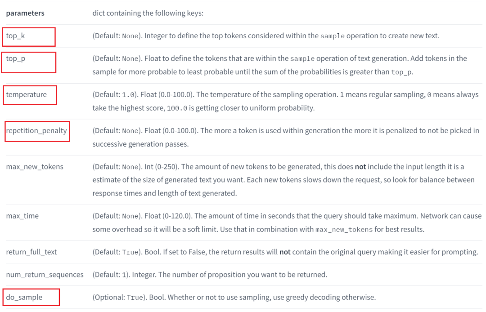
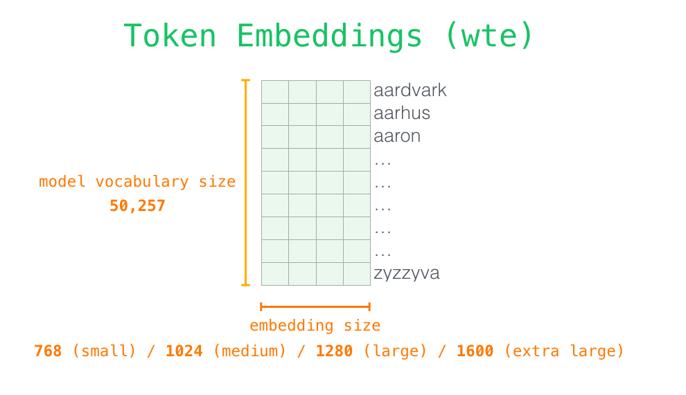
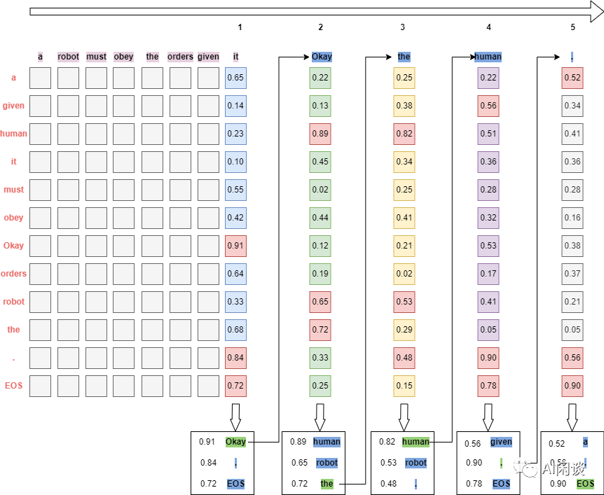
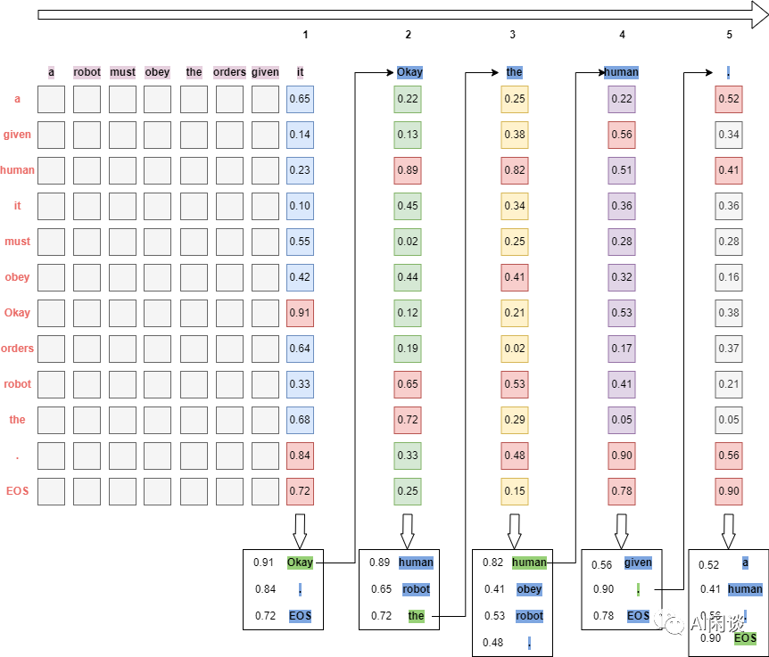

LLM 推理常见参数
1.引言
以下图Huggingface Inference API为例（其他框架类似），这里重点介绍$top_k$,$top_p$,$temperature$,$repetition_penalty$参数，以及$greedy~search$和$beam~search$。

2.背景介绍
现在常见的LLM基本都是只包含Transformer Decoder的，每个Token在输入模型的Transformer Decoder之前，都会首先从Token Embedding（有些也叫Word Embedding）中通过查表获取对应的embedding向量，然后将embedding向量输入Transformer Decoder，并且在最后一层输出的也是同维度的embedding。在预测下一个Token时，实际只利用了上一个Token的embedding。
如下图所示，将输入“a robot must obey the orders given it”对应的embedding输入Transformer Decoding后，在最后的Transformer Decoder之后，每个Token对应的位置相应的也会生成一个新的embedding，然后使用最后一个Token“it”对应的新生成的embedding（蓝色） 来生成新的Token“Okay”，之后将新的Token“Okay”也作为输入，进一步根据“Okay”对应位置新生成的embedding来生成新的Token“human”，以此类推：
_5dXIUr8oeN.gif>)
那么怎么根据新生成的embedding来生成下一个Token呢，如下图所示，具体来说是让新生成的embedding与Token Embeddings矩阵相乘（也就是和每个Token对应的embedding向量做内积），得到和词表中每个Token的相似性得分（logits），然后基于这个得分即可以选择生成新的Token（比如直接取得分最高的Token）。

其中的Token Embeddings行数即为模型词表中Token的个数，列数即为embedding的维度，也就是每个Token对应一个embedding向量，如下图所示：

对于LLM的推理过程详情可以参考这两篇博文：
3.Greedy Search
假设词表中有“a”,“given”,“human”,“it”,“must”,“obey”,“Okay”,“orders”,“robot”,“the”,“.”,“EOS”共12个Token，其中“EOS”表示终止Token。
GreedySearch（贪心搜索）的思路非常简单，就是每次都从相似性得分（logits）选择得分最高的Token（一般来说，都会将得分经过softmax层转换为概率分布，数值区间为0~1，此处为了简单，就不额外转换，不过都假设数值在0~1之间），直到结束。如下图所示：
- Step1：使用最后一个Token“
it”对应的新生成的embedding来计算相似性得分（logits），最终“Okay”对应的得分0.91最高，所以选择“Okay”作为下一个Token。 - Step2：使用“
Okay”来计算相似性得分（logits），最终“human”对应的得分0.89最高，所以选择“human”作为下一个Token。 - Step3：使用“
human”来计算相似性得分（logits），最终“.”对应的得分0.78最高，所以选择“.”作为下一个Token。 - Step4：使用“
.”来计算相似性得分（logits），最终“EOS”对应的得分0.90最高，所以终止生成。

在推理阶段模型的权重都是确定的，并且也不会有dropout等其他随机性（忽略不可抗的硬件计算误差，比如并行规约求和的累积误差等），因此如果是greedy search，则对于同一个输入，多次运行后模型的输出结果应该完全一致。
- 这样的好处是在模型效果严格对齐时非常有必要（比如将模型从Huggingface模型转换为推理效率更高的Faster Transformer模型，并且使用Faster Transformer进行推理部署）。
- 这样的坏处是模型效果可能不是最优的，也会缺乏一定的多样性，比如用同样的问题问ChatGPT，其答案并不会每次都一样。至于如何增加多样性。
4.Beam Search
BeamSearch是GreedySearch的改进版本，其不再是每次都取得分最大的Token，而是始终保留beam_size个得分最大的序列。还是使用上面的例子。如下图所示，假设beam_size为2，也就是始终保留两个得分最大的序列：
Step1：使用最后一个Token“it”对应的新生成的embedding来计算相似性得分（logits），最终“Okay”对应的得分0.91和“.”对应的得分0.84最高，所以选择“Okay”和“.”作为下一个Token。
- “a robot must obey the orders given it Okay”，对应得分0.91
- “a robot must obey the orders given it .”，对应得分0.84
Step2：分别使用“Okay”和“.”来计算相似性得分（logits）
- 对于“
Okay”，最终“human”对应的得分0.89和“the”对应的得分0.72最高，对应候选序列 - “a robot must obey the orders given it Okay human”，对应得分0.8099
- “a robot must obey the orders given it Okay the”，对应得分0.6552
- 对于“
.”，最终“the”对应的得分0.92和“EOS”对应的得分0.70最高，对应候选序列 - “a robot must obey the orders given it . the”，对应得分0.7728
- “a robot must obey the orders given it .”，对应得分0.5880
- 从以上4个序列中选出得分最高的2个保留：
- “a robot must obey the orders given it Okay human”，对应得分0.8099
- “a robot must obey the orders given it . the”，对应得分0.7728
Step3：分别使用“human”和“the”来计算相似性得分（logits）
- 对于“
human”，最终“.”对应的得分0.78和“human”对应的得分0.72最高，对应候选序列 - “a robot must obey the orders given it Okay human.”，对应得分0.6317
- “a robot must obey the orders given it Okay human human”，对应得分0.5831
- 对于“
the”，最终“human”对应的得分0.80和“robot”对应的得分0.68最高，对应候选序列 - “a robot must obey the orders given it . the human”，对应得分0.6128
- “a robot must obey the orders given it . the robot”，对应得分0.5255
- 从以上4个序列中选出得分最高的2个保留：
- “a robot must obey the orders given it Okay human.”，对应得分0.6317
- “a robot must obey the orders given it . the human”，对应得分0.6128
Step4：分别使用“.”和“human”来计算相似性得分（logits）
- 对于“
.”，最终“robot”对应的得分0.81和“EOS”对应的得分0.90最高，对应候选序列 - “a robot must obey the orders given it Okay human. robot”，对应得分0.5117
- “a robot must obey the orders given it Okay human.”，对应得分0.5685
- 对于“
human”，最终“must”对应的得分0.68和“.”对应的得分0.90最高，对应候选序列 - “a robot must obey the orders given it . the human must”，对应得分0.4167
- “a robot must obey the orders given it . the human.”，对应得分0.5515
- 从以上4个序列中选出概率最高的2个保留，由于此时得分最高的“a robot must obey the orders given it Okay human.”已经生成终止符Token“
EOS”，所以可以在此终止，因为不会有其他得分更高的序列。

由于beam search会同时保留多个序列，因此就更容易得到得分更高的序列，并且beam_size越大，获得更高得分的概率越高。然而从上面也可以看出，每个step都需要进行beam_size次前向计算（当然可以使用batch计算，但总的计算量不变），也就是计算量会扩大beam_size倍。另一方面，LLM推理中一般都会使用Key、Valuecache，这也就会进一步增大Key、Valuecache的内存占用，同时增加了Key、Valuecache管理的复杂度。这也就是在LLM推理中为什么比较少使用beam search。
与greedy search类似，虽然beam search保留了多个序列，但最终输出时还是返回的得分最大的序列，因此对于同一个输入，使用beam search，多次运行模型最终的输出依然是固定不变的。
5.top_k
从上面的介绍可以看出，不管是greedysearch，还是beamsearch，对于固定输入，模型的输出是固定不变的，这就显得比较单调，为了增加模型输出的多样性，人们提出了top-k采样策略，其不像greedysearch那样每次取分数最高的，而是先选出分数最高的k个，然后将其分数作为权重进行随机采样，得到下一个Token。这也就引入了随机性，每次预测的结果都可能不一样。
还是以上面的例子来介绍，如下图所示（假设k=3）：
- Step1：使用最后一个Token“
it”对应的新生成的embedding来计算相似性得分（logits），选出得分最高的3个Token：[“Okay”、“.”、“EOS”]，对应的权重为：[0.91,0.84,0.72]，使用该权重进行随机采样，获得新Token“Okay”。 - Step2：使用“
Okay”来计算相似性得分（logits），选出得分最高的3个Token：[“human”、“robot”、“the”]，对应的权重为：[0.89,0.65,0.72]，使用该权重进行随机采样，获得新Token“the”，事实上，“the”并不是得分最高的。 - 以此类推，最终得到输出序列：“a robot must obey the orders given it Okay the human.”

可以看出，如果top_k=1，则对应greedysearch。
6.top_p
在top_k中，每次都是从k个Token中采样，但是难免会出现一些特殊的case，比如某一个Token的分数非常高，其他分数都很低，此时仍旧会有一定的概率采样到那些分数非常低的Token，导致生成输出质量变差。此时，如果k是可变的，那么就可以过滤掉分数很低的Token，在The Curious Case of Neural Text Generation.中，作者提出了top_p采样，在每个step中，都对输出分数进行排序，然后将分数从大到小累加，直到累加分数大于设置的p为止，然后和top_k类似，将每个选择出来的Token的分数作为权重进行随机采样。这样，每次候选的Token个数都会因为Token分数的分布不同而不一样。
还是以上面的例子来介绍，如下图所示（假设p=2.2）：
- Step1：使用最后一个Token“
it”对应的新生成的embedding来计算相似性得分（logits），选出累积得分超过2.2的Token：[“Okay”、“.”、“EOS”]，对应的权重为：[0.91,0.84,0.72]，使用该权重进行随机采样，获得新Token“Okay”。 - Step2：使用“
Okay”来计算相似性得分（logits），选出累积得分超过2.2的Token：[“human”、“robot”、“the”]，对应的权重为：[0.89,0.65,0.72]，使用该权重进行随机采样，获得新Token“the”，事实上，“the”并不是得分最高的。 - Step3：使用“
the”来计算相似性得分（logits），选出累积得分超过2.2的Token：[“human”、“obey”、“robot”、“.”]，对应的权重为：[0.82,0.41,0.53,0.48]，使用该权重进行随机采样，获得新Token“human”，事实上，“human”并不是得分最高的，并且此时选出了4个候选Token。 - 以此类推，最终得到输出序列：“a robot must obey the orders given it Okay the human.”

虽然从理论上讲，top_p似乎比top_k更优雅，但这两种方法在实践中都很好用。top_p也可以与top_k结合使用，这可以避免分数非常低的Token，同时提供一些动态选择的空间。
7.temperature
事实上，在top_k和top_p的采样中并不是完全按照分数权重来采样的，一般采样前我们会将候选Token的得分向量经过softmax（公式如下图）转换为概率，然后按照概率分布采样。
很多时候我们想要控制采样的随机性，可以使用带有温度系数T的softmax实现，如下所示，温度系数T为大于0的任意值（Huggingface中限制0.0<T<100.0）。当**T=1**时，输出分布将与标准softmax输出相同。T的值越大，输出分布就越平滑，T的值越小，输出分布越陡峭。
- 如果希望增加输出分布的随机性，可以增加参数T的值，当T为无穷大时，分布变成均匀分布，就是完全随机。
- 如果希望减小输出分布的随机性，可以减小参数T，当T趋近于0时，就是等价于取top1。
假设得到的候选Token为：[“human”、“obey”、“robot”、“EOS”]，对应的分数为：[0.92,0.11,0.33,0.04]，则对于不同的参数t，利用上面的softmax可以得到对应的概率分布为：
- 橙色：
t=1，分布不变，不改变随机 - 蓝色：
t<1，减小随机性，并且t越小，随机性越小 - 红色：
t>1，增大随机性，并且t越大，随机性越大
8.repetition_penalty（重复惩罚）
这个选项最早是由A Conditional Transformer Language Model for Controllable Generation中提出的，其是为了解决语言模型中重复生成的问题，即使比较大的LLM也会存在。其思想比较简单，就是记录之前已经生成过的Token，当预测下一个Token时，人为降低已经生成过的Token的分数，使其被采样到的概率降低。
如下所示，直接基于上述带温度系数T的softmax进行实现，其中的g表示已经生成过的Token列表，如果某个Token已经在生成过的Token列表g中，则对其对应的温度系数T乘上一个系数θ，θ为大于0的任意值。
θ=1，表示不进行任何惩罚θ>1，相当于尽量避免重复θ<1，相当于希望出现重复
还是使用上一部分的示例，假设得到的候选Token为：[“human”、“obey”、“robot”、“EOS”]，对应的分数为：[0.92,0.11,0.33,0.04]，令g=[“robot”,“it”]，也就是这些Token已经生成过，对应的惩罚系数θ=3，可以看出，“robot”对应的采样概率都在降低：

如果希望鼓励出现重复，可以设置惩罚系数θ<1，比如，令θ=0.5，可以看出，“robot”对应的采样概率都在增加：
9.总结
通过以上的介绍，大概知道了各个参数的含义，整体来说：
GreedySearch是最简单、最直接的方式，其可以保证稳定的输出，相应的，BeamSearch可以进一步提升生成效果，但是代价更高，也是可以保证稳定的输出。top_p和top_k都可以用于增加模型生成结果的多样性，输出结果往往会变。- 温度系数
temperature一般用于控制随机性，temperature越大，随机性越强，temperature越小，随机性越弱。 - 重复惩罚
repetition_penalty用于避免模型一直输出重复的结果，repetition_penalty越大，出现重复性可能越小，repetition_penalty越小，出现重复性可能越大。